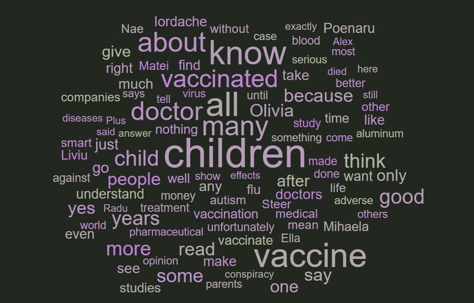

 

<span *ngIf = "!statsPage">

<div class="container">
  <div class="messages-view" style = "background: white;">
    <br><br>
    <div *ngFor="let msg of messages">
      <div *ngIf="msg.user=='bot'" style="text-align: right">
        <span>
          <button type="button" class="btn btn-info">{{msg.text}}</button>
          
        </span>
      </div>
    
      <div *ngIf="msg.user!=='bot'" class="text-message" style="text-align: left; margin-left: 10px;">
        <span class="typewriter">
          
          <button type="button" class="btn btn-dark">{{msg.text}}</button>
        </span>
        
      </div>
    </div>
    <div id="last-msg">
      <em>
        {{messages[messages.length-1].timestamp | date : "medium"}}
      </em>
    </div> 
  </div>
  
  <hr> 

  <div class="input-group">
    <input type="text" class="form-control" id="text-message" placeholder="type here.." (keydown.enter)="onMessageSend()">
    <span class="input-group-btn">
    </span>
    <button type="button" class="btn btn-success send-btn" (click)="onMessageSend()"> send </button>
  </div>

</div>

<div *ngIf="!isDemo" class="stats"> 
    <table class="table">
        <thead>
          <tr>
            <th scope="col">sentiment</th>
            <th scope="col">score</th>
            <th scope="col">key words</th>
          </tr>
        </thead>
        <tbody>
          <tr *ngFor="let line of statistics" class="{{ 'sent-' + line.sentiment }}">
            <td>{{ line.sentiment }}</td>
            <td>{{ line.score == null? '-' : (line.score * 100) + "%" }}</td>
            <td>{{ line.keywords }}</td>
          </tr>   
        </tbody>
      </table>
      
  </div>
</span>

<a *ngIf="!isDemo && !statsPage" href="/stats" style="padding-left:100px">see wordcloud diagram</a>

<span *ngIf = "statsPage">
  
</span>


